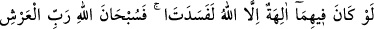
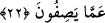

zarûrî olarak onların ölüleri dirilteceğini de iddiâ etmiş olmaktadırlar. Çünkü ölüleri
diriltmek ilah olmanın zorunlu özelliklerindendir.
22. Eğer yerde ve gökte Allah’tan başka ilahlar bulunsaydı, yer ve gök, (bunların
nizamı) kesinlikle bozulup gitmişti. Demek ki Arş’ın Rabbi olan Allah, onların
yakıştırdıkları sıfatlardan münezzehtir.
“Eğer yerde ve gökte Allah’tan başka ilahlar bulunsaydı…” Bu ifade Cenab-ı
Hakk’ın kendisini aklî delillerle eşi ve ortağı olmaktan tenzih etmesidir. Yâni, onların
inandığı gibi göklerde ve yerde, ister Allah onlarla birlikte olsun, ister olmasın
Allah’tan başka ilahlar olsaydı…”
el-Es’iletü’l-mukhime’de şöyle der: “Eğer “Nasıl oluyor da âyette “yerde ve gökte”
buyrularak bir tahdid (sınırlama) olduğu halde gökler zarf yapılıyor?” denirse, bunun
cevabı şöyledir: “Burada “fîhimâ (o ikisinde/yerde ve gökte)” ifâdesi ile zarf anlamı
murâd edilmemiştir. Bu ifâde tıpkı “Gökteki İlâh da, yerdeki İlâh da O’dur.” (ez-
Zuhruf, 43/84) âyeti gibidir.
“Yer ve gök,” bunlarda görülen nizam “kesinlikle bozulup gitmişti.”
“el-Fesad” bir şeyin az olsun çok olsun îtidalden çıkmasıdır. Bunun zıddı, “es-
salâh”tır. Fesad; nefis, beden ve her türlü eşyânın istikâmetten çıkması hakkında
kullanılır.
Yerde ve gökte Allah’tan başka ilahlar bulunsaydı düzen bozulurdu. Çünkü, iki kişiye
bağlı olan her iş, bir düzen üzere devam etmez. Halk da iki kraldan gelen farklı emirler
karşısında şaşırıp kalır, düzeni bozulur. Sonrakinin yok sayılması, öncekinin de yok
sayılmasını gerektirir.
et-Te’vîlâtü’n-Necmiyye’de şöyle der: “Bu âyete göre eğer yerde ve gökte Allah’tan
başka ilahlar olsa, ya hepsi ulûhiyyette ve kemâl-i kudret sahibi olma konusunda eşit
olurlar. Ya da bazısı kâmil ve bâzısı nâkıs olur. Yahut hepsi nâkıs olur; ilahlık
konusunda bazıları diğerlerine muhtaç olur. Şâyet bir kısmı nâkıs ve diğerleri kâmil
olursa, bu taktirde kâmil olanın nâkıstan müstağnî olması gerekir. Halbuki noksan olanın
ilahlığı sahih olmaz. Nâkıs olanların durumuna gelince; onlardan bazıları diğerlerinin
yardımına muhtaç olur ve onların ilahlığı sahih olmaz. Çünkü onlar, tek ve kendisinden
başkasından müstağnî olan bir mükemmele muhtaçtırlar. İşte O; tek, eşsiz, samed (hiçbir
şeye muhtaç olmayan ve her şeyin kendisine muhtaç olduğu) ve zâtının gayrısından
müstağnî olan Allah’tır. Başkaları ise O’na muhtaçtır. Eğer yerde ve gökte Allah’tan
başka ilahlar olsaydı, ulûhiyette noksansız bir müdebbirin (düzenleyicinin) yokluğundan
ve ilah edinilen şeylerin işleri tanzim etme konusundaki acziyetinden ötürü yerin ve